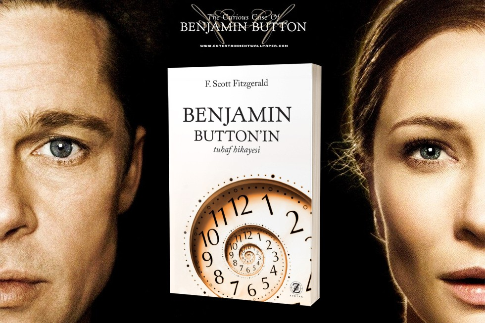

Загадочная история Бенджамина Баттона
Описание фильма
В госпитале пожилая женщина просит свою дочь почитать дневник, к которому не прикасалась долгие годы. История написана неким Баттоном и сразу вызывает множество вопросов. После войны на одном из американских вокзалов установили часы, которые шли назад. По иронии судьбы, в ночь, когда закончилась Первая мировая война, в семье Баттонов случилась трагедия: молодая мать умерла при родах, оставив после себя ребенка-уродца. Малыш выглядел как настоящий старик. Увидев причину смерти любимой жены, отец подкинул малыша к дому престарелых и ушел. Куини, работница приюта, подобрала новорожденного. Все думали, что мальчик скоро умрет, но Бенджамин стал молодеть. Маленький Баттон познавал мир, знакомился с людьми. Встреча с Дейзи перевернула жизнь юного старичка: он обрел лучшего друга. Годы шли, и Бенджамин решил уйти из родного гнезда, найти работу и стать самостоятельным. А девушка с головой окунулась в танцы и наслаждалась славой. Авария и несколько переломов заставили Дейзи сменить планы и подарили новую встречу с Баттоном. Молодые люди признались друг другу в любви и решили жить вместе. У пары родилась дочь. Но уникальность Бенджамина заставила его уйти из семьи. Он объездил весь мир, а его возлюбленная вышла замуж, чтобы подарить их ребенку настоящую семью. Когда женщина состарилась, один звонок изменил ее жизнь. Ей сообщили, что нашелся Баттон и ему нужен уход. С тех пор Бенджамин жил в доме для престарелых, а Дейзи каждый день навещала его и была рядом до самой смерти. Закончив рассказ и чтение дневника, старушка из госпиталя закрыла глаза и покинула этот мир. Голос героя поведал о разных людях, которых он встретил в своей жизни. А часы, которые уже давно убрали с вокзала, продолжили свой обратный отсчет.
Назад